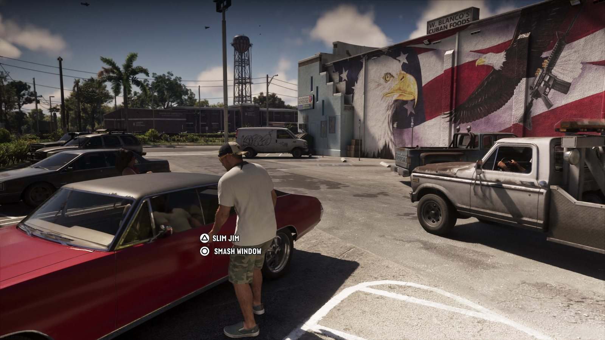

Миф: в GTA 6 можно угнать любую машину
Обновлено:

- В «Расширенном показе» у старой машины две опции: Slim Jim или разбить стекло.
- Дорогие машины с электронными замками требуют клонер ключей.
- По данным Engadget: «не каждую машину получится завести проводами».
- Slim Jim — реальный инструмент, который работает только на старых машинах.
Миф
Правда: угон зависит от машины. Старую можно вскрыть или разбить стекло, а дорогую с электроникой без специального инструмента не заведёшь.
Двадцать пять лет серия учила: видишь машину — она твоя. Максимум герой разбивал локтем стекло. GTA 6 впервые делает угон задачей, а не формальностью.
Что видно в кадре
06:04, парковка в Ambrosia у кубинского магазина W. Blanco’s с огромной фреской-орланом. Джейсон подходит к старому красному седану, и над ним появляются две подсказки:
- △ Slim Jim — вскрыть замок тихо;
- ○ Smash Window — разбить стекло, быстро и шумно.
По данным Engadget, Slim Jim — это мини-игра на время с правым стиком. Выбор логичный: разбитое стекло видно и слышно, а новая система розыска реагирует на свидетелей.
Что такое Slim Jim
Slim Jim — настоящий инструмент: тонкая металлическая пластина с крючком, которую просовывают между стеклом и уплотнителем двери, чтобы зацепить тягу замка. Им десятилетиями пользовались эвакуаторщики и слесари. На современных машинах он почти бесполезен: тяги спрятаны или заменены электроникой, а в дверях стоят подушки безопасности и проводка, которые легко повредить. Поэтому в кадре Slim Jim предлагают именно у старого седана — Rockstar явно в курсе.
Электронные замки
Для новых и дорогих машин, по данным Engadget, нужен клонер ключей — устройство, которое копирует сигнал брелока. Формулировка из разбора: «не каждую машину получится завести проводами». Раньше мы писали, что у машин разный уровень защиты (Угон и топливо в GTA 6). Теперь понятно, как это выглядит на практике: старьё вскрывается руками, а для люкса нужна подготовка.
Логичное следствие (наша догадка): спорткар с улицы уже не будет «бесплатным призом». Скорее всего, за дорогими машинами придётся охотиться отдельно — как за добычей.

Правда
🔴 Миф. Угнать можно многое, но не всё и не одинаково. Старые машины — Slim Jim или стекло, дорогие — только с клонером ключей. Для GTA это маленькая революция: даже угон теперь требует выбора. Ещё мифы — 10 мифов о GTA 6 и Миф: трейлеры GTA 6 — это пререндер, в игре так не будет.
Источники: Rockstar Games — «Grand Theft Auto VI: An Extended Look», 06:04; Engadget (мини-игра Slim Jim, электронные замки, клонер ключей).